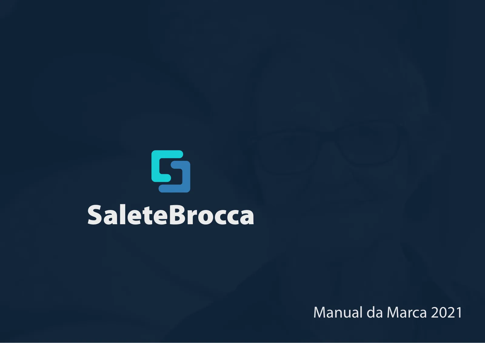
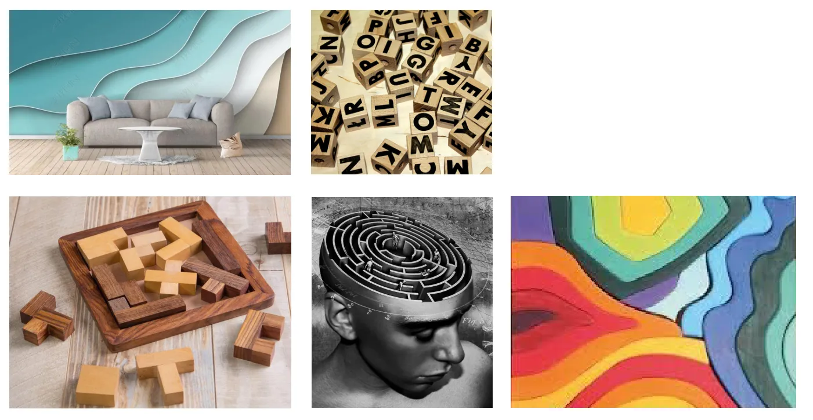
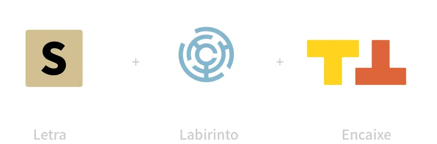
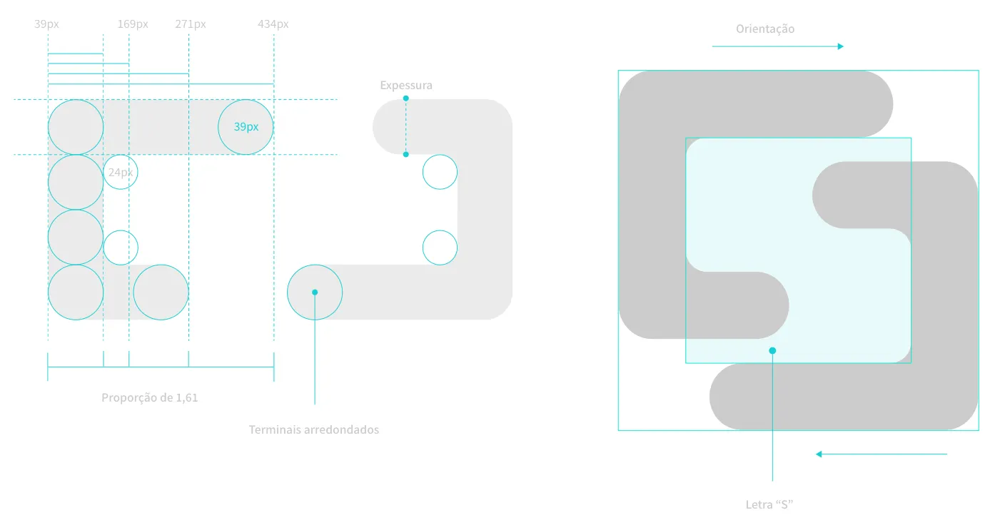
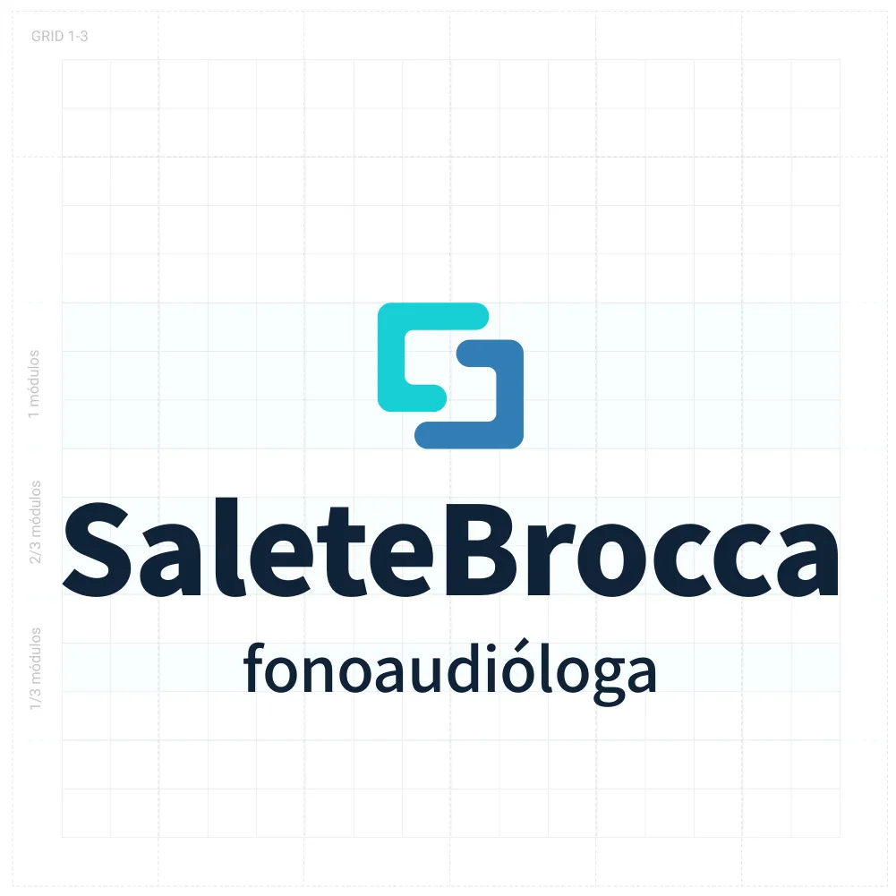
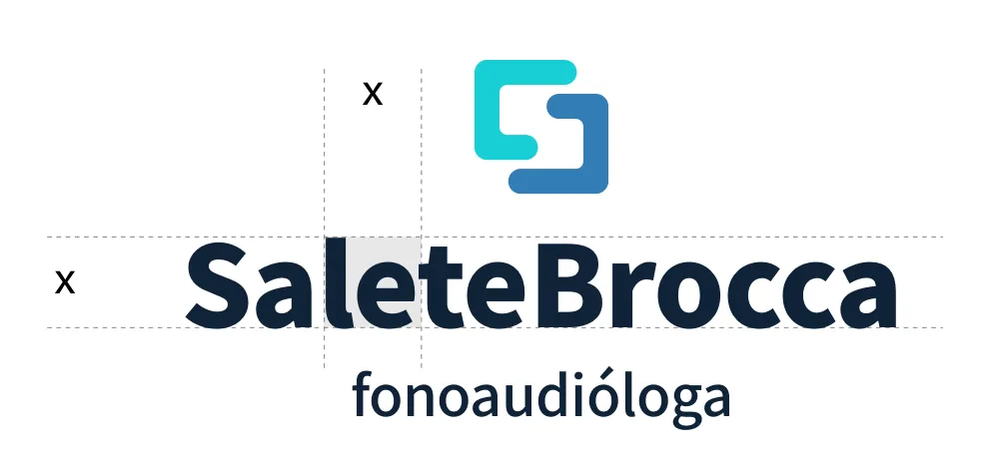
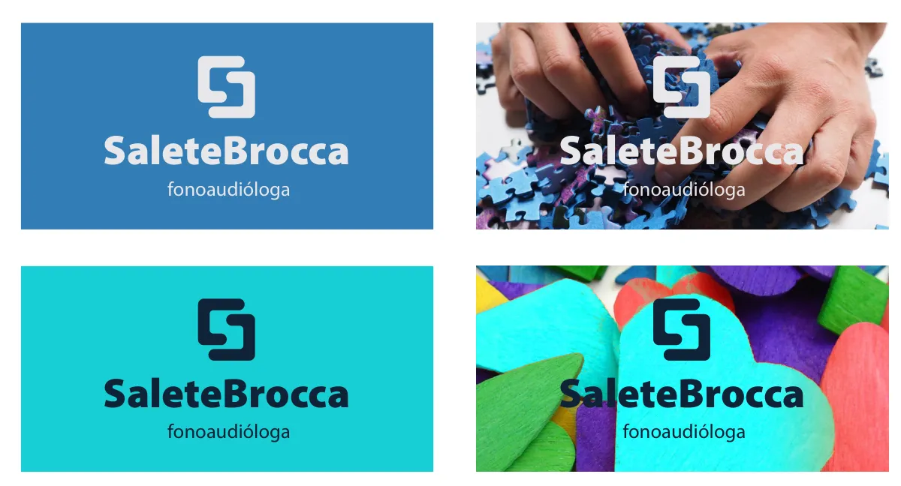
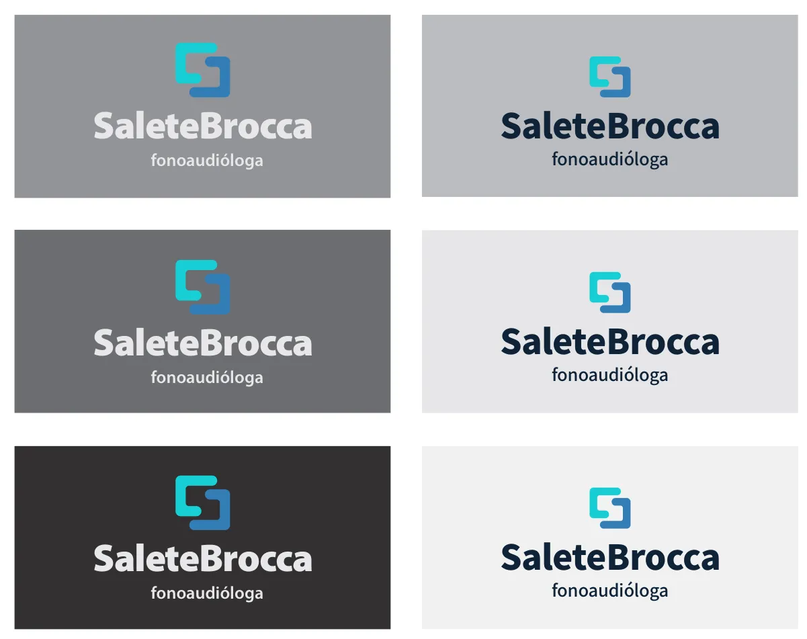
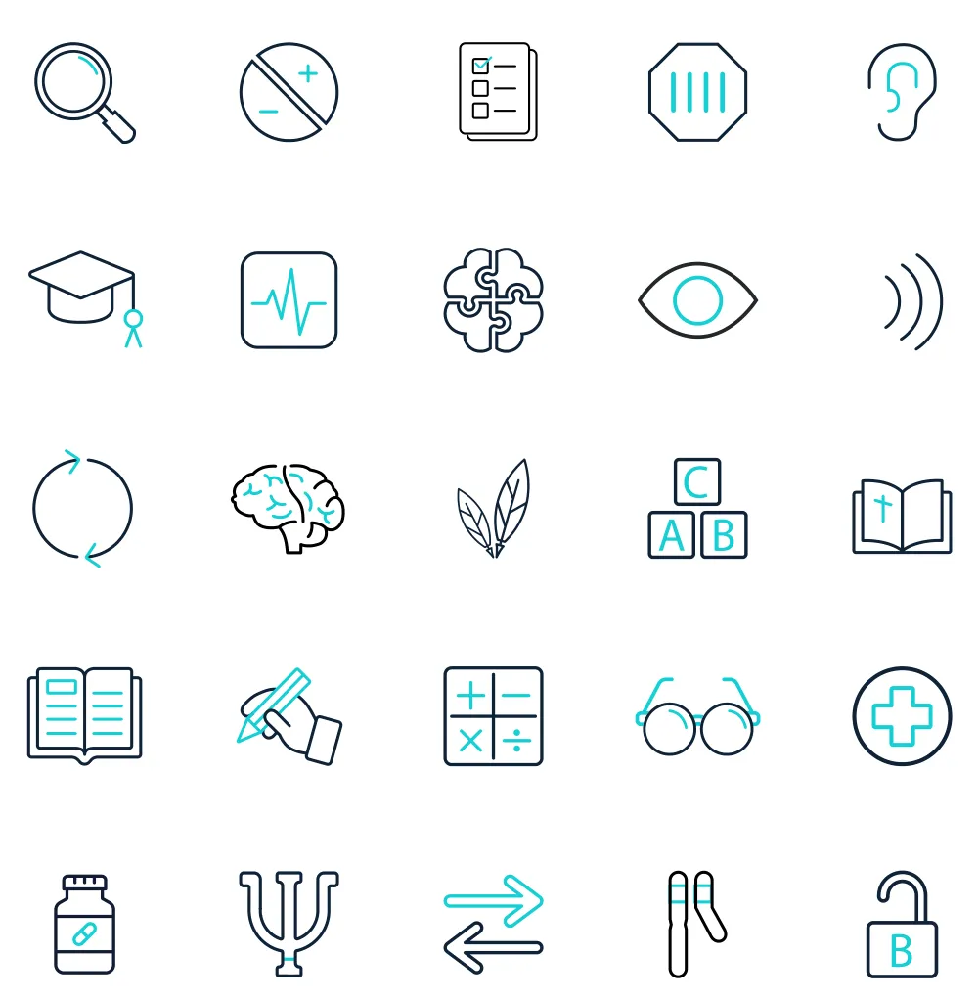
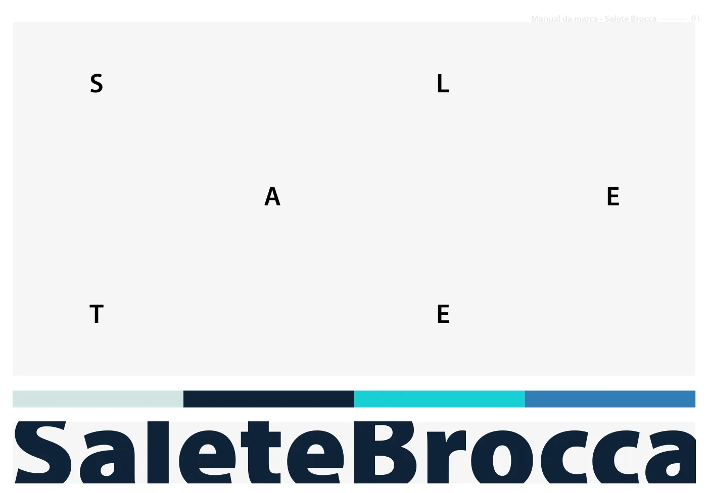

A versão digital do manual de identidade visual de Maria Salete Brocca. Ele reúne história, conceito, símbolo, cores, tipografia, versões do logo, usos corretos e proibidos, pattern, ícones, grafismos e aplicações.
Explore: copie as cores, teste a tipografia, reduza o logo até o tamanho mínimo, troque o fundo e compare cada proibição com o uso correto.

01
História, valores e voz
Maria Salete Brocca é professora e fonoaudióloga clínica. Iniciou sua carreira aos 16 anos, em 1960, em uma escola multisseriada, onde alcançou o cargo de direção e, posteriormente, tornou-se fonoaudióloga.
Atualmente atende em consultório particular, tratando exclusivamente crianças com dificuldade na aprendizagem, mais especificamente dislexia, e atende também na APAE de Cocal do Sul, tratando crianças com deficiência intelectual e outras comorbidades e síndromes raras.
Ministra cursos presenciais e online para professores e profissionais da área. Frequentemente desenvolve projetos paralelos, como jogos e softwares que auxiliam a criança no processo de alfabetização.
Sua história e seus valores motivaram a criação desta marca. Sua relação com os alunos e o modo com que enfrenta cada caso específico como um desafio a ser superado nos levam a entender que a voz dessa marca é simples, dinâmica e otimista.
Sua abordagem nas campanhas se mostra inclusiva e minimalista, e o nível de proximidade com o público é intimista e atencioso. A linguagem, apesar de muitas vezes parecer técnica e científica, é simples e didática na escrita e na fala.
A Salete Brocca é entusiasmada e otimista e está sempre pronta para ajudar na evolução das pessoas e da sociedade.
“Que toda criança, independente da dificuldade, tem a capacidade de ler e escrever.”
Simples
Dinâmica
Otimista
Inclusiva
Minimalista
Intimista
Atenciosa
Didática
02
Conceito
O cérebro humano é um grande quebra-cabeça: são peças que se comunicam entre si e, juntas, trabalham para alcançar um determinado objetivo. Para ajudar a alcançar esse objetivo, precisamos de profissionais como Maria Salete, que auxilia nessa jornada, direcionando esses pensamentos por um caminho mais rápido e eficiente.

Palavras-chave
Neurociência
Alfabeto
Voz
Segurança
Amigável
Humana
Esperança
Atenciosa
Dinâmica
Otimista
Simples
Acessível
Confiável
03
Símbolo
Foi desenvolvido na proporção de 1,6, o número áureo aproximado. Apresenta duas formas simétricas, porém distintas na sua orientação. Elas estão direcionadas para o centro, demonstrando que podem ser encaixadas. Utilizando-se da lei do fechamento, encontramos a inicial da profissional, a letra “S”, que se torna a peça central e mais importante.
Os terminais foram arredondados para trazer conforto a quem observa, e a espessura grossa garante confiabilidade e simpatia.

Letra + Labirinto + Encaixe = Símbolo

Módulos
39 · 169 · 271 · 434 px
Proporção
1,61 (434 ÷ 271 ≈ 271 ÷ 169)
Terminais
Arredondados, círculo de 39 px
Leitura
Letra “S” no encaixe central
04
Cores
As cores frias e análogas transmitem os principais atributos da marca, e os altos valores entre elas agradam o público infantil e trazem dinâmica e alegria para a marca. Garantem também um ótimo contraste para todo tipo de composição.
Dinâmica · Otimista
Acessível · Amigável
Confiança · Segurança
05
Logotipo e tag
A tipografia sem serifa e humanista reforça as características da marca: acessível, amigável e humana.
SaleteBroccafonoaudióloga
Nome
Noto Sans Black
Tag
Noto Sans Bold
Recriação em fonte para mostrar as famílias. Nas peças, use sempre os arquivos oficiais do logo, nunca o nome digitado.
06
Logomarca
A logomarca é montada sobre o grid 1-3: o símbolo ocupa 1 módulo, o nome 2/3 de módulo e a tag 1/3 de módulo.

Símbolo
1 módulo
SaleteBrocca
2/3 de módulo
fonoaudióloga
1/3 de módulo
07
Paleta de cores
As primárias são cores de reconhecimento, que ajudam a criar uma distinção maior das outras marcas do segmento. As de apoio são cores de suporte, com um papel mais funcional, ainda que importante para criar harmonia com as primárias. Sempre que possível, a logomarca deve ser usada nas versões preferenciais de cor.
Clique em um valor para copiar.
Versão preferencial
Cores de apoio
O HEX é a referência (é o mesmo token do site). O RGB foi calculado a partir dele; Pantone e CMYK estão como no manual impresso.
08
Tipografia
A tipografia institucional identifica e uniformiza os textos das peças de comunicação institucionais e promocionais. A família principal é a Noto Sans, desenvolvida pelo Google para tornar a web mais bonita em todas as plataformas e idiomas. A família de apoio é a Martel, serifada, que ajuda na leiturabilidade dos textos.
O uso combinado das duas traz personalidade e conforto visual. A Martel é indicada para textos de leitura extensa; títulos e destaques devem ser compostos em Noto Sans.
AaNoto SansTítulos e destaques
AaMartelTextos de leitura extensa
Título
Texto corrido em Martel: confortável para leituras longas, como artigos, materiais de curso e textos de apoio. A combinação com títulos em Noto Sans mantém a marca próxima e clara.
Destaque
Destaques curtos em Noto Sans Bold, em caixa alta, chamam a atenção sem pesar a página.
09
Versões
A logomarca possui 4 versões: vertical padrão, de uso preferencial, vertical especial, horizontal e responsiva. As versões horizontal, vertical especial e responsiva são indicadas somente quando a vertical padrão apresentar dificuldades.
10
Margem de segurança
Para aumentar a percepção da marca, é necessário respeitar uma área em toda a sua volta, livre de qualquer interferência. Essa área é medida pelo valor de X, que pode ser encontrado na própria marca, como mostra o exemplo.

Nenhum texto, imagem ou borda entra na área X ao redor da marca.
11
Redução
Respeitar o tamanho mínimo da logomarca preserva a legibilidade e garante a experiência correta com a marca. Em sistemas digitais as reduções estão em pixels; na impressão, em centímetros, considerando 300 DPI.
Com tag
Com tagDigital 130px · Print 1,10cm
Sem tagDigital 97px · Print 0,82cm
Só o símboloAbaixo de 97px · abaixo de 0,82cm
12
Positivo/negativo
A logomarca em positivo e negativo deve ser usada apenas quando existe uma limitação técnica, como ausência de cores, que prejudique a aplicação da versão preferencial.

13
Aplicação em fundos
Escolha um fundo da paleta: a página mostra a versão da marca que mantém o contraste.

Referência do manual impresso: fundos neutros.
14
Proibições
É importante respeitar todos os elementos que constituem a logomarca. Estes são exemplos de usos que devem ser evitados. Toque em um card para comparar com o uso correto.
15
Pattern
O pattern se aplica em diversas composições e pode ter suas cores alteradas, desde que sejam as cores institucionais. Ele nasce da repetição de um módulo.
Cor das linhas
Cor do fundo
Módulo repetidor
16
Iconografia
Ícones de traço com terminais arredondados, como o símbolo, em navy com detalhes em ciano. A versão completa e pesquisável está na página Ícones.

17
Grafismos
Os grafismos derivam diretamente do conceito da marca e podem apoiar composições ou aparecer em destaque, porém a marca deve estar sempre presente em alguma de suas versões. Os grafismos em uso no site estão no Design System.

18
Aplicações
As aplicações se dividem em impressas e digitais: papelaria, máscara, canecas, jogos didáticos, cursos online, mídia social e websites. Toque em uma imagem para ampliar.